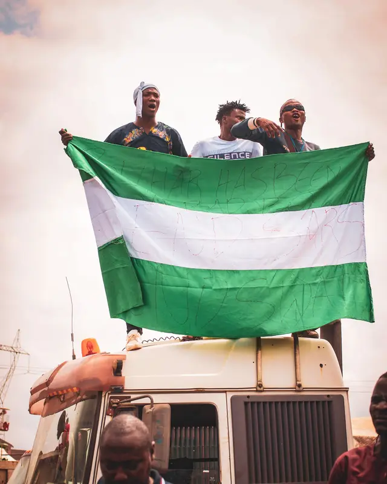

Data
- Capital:Abuja
- Population:223 million
- Region:West Africa
- Language:English
- Currency:Naira (₦)
- Government:Federal Republic
Weather
- Temperature:31°C
- Wind Speed:14 km/h
- Wind Chill:
- Conditions:Partly Cloudy
Nigeria is the largest economy and one of the most populous countries in Africa, renowned for its rich cultural diversity and vibrant heritage. Home to over 250 ethnic groups and hundreds of languages, Nigeria offers a unique blend of traditions, innovation, and natural beauty, from bustling cities and thriving business hubs to scenic landscapes and historic landmarks. The country's resilient people, growing technology sector, dynamic creative industries, and abundant opportunities continue to position Nigeria as a leading force for economic growth and development across the African continent.